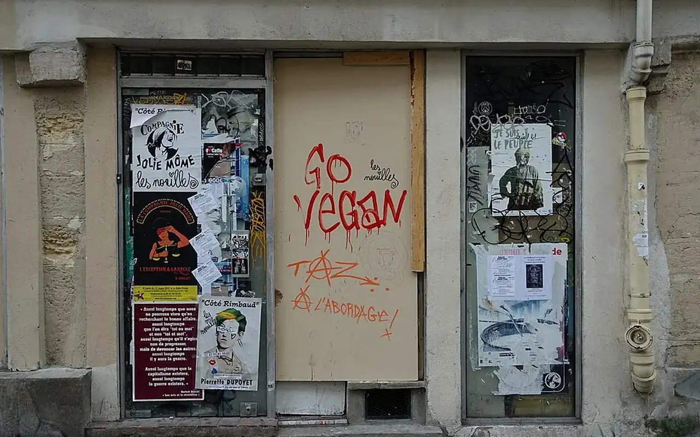

Methode publique
Parcours d'une demande
Pour rester credible, TVF distingue clairement la réception d'une demande, sa qualification, la décision interne, la convention eventuelle et la publication des résultats.

Un parcours simple pour l'utilisateur, rigoureux pour l'association
Le visiteur doit comprendre ce qui se passe après un formulaire. Une demande n'est pas automatiquement un projet TVF : elle devient un dossier à qualifier, puis une action seulement si les conditions sont reunies.
Reception
Le formulaire est enregistre avec les informations transmises et un statut initial.
Verification
TVF controle les données essentielles : contact, territoire, type de demande, pièces et risques.
Qualification
La demande est analysee au regard de l'utilité territoriale, des droits, du coût et de la faisabilité.
Orientation
TVF peut classer, ajourner, demander des précisions, orienter vers un acteur ou preparer un projet.
Convention
Si l'action se confirme, les responsabilités sont formalisees avant toute intervention.
Suivi
Les résultats sont mesures et publies uniquement après validation.
Eviter les confusions entre idee, piste et projet
Recu
La demande est bien transmise mais n'à pas encore ete analysee.
A compléter
Des informations manquent : photos, adresse, contact, autorisation, documents ou contexte.
En qualification
TVF étudié le potentiel, les contraintes et les acteurs à mobiliser.
Non retenu ou reoriente
La demande ne correspond pas au cadre TVF ou releve d'un autre service.
selon calendrier de déploiement
Un scenario est travaille : budget, acteurs, usage, calendrier et cadre juridique.
Conventionne
Un accord formalise permet de demarrer l'action dans des conditions claires.
Proteger les personnes, les biens et la credibilite
TVF ne publie pas une adresse, une photo identifiable, un nom de propriétaire, un partenaire ou un financeur sans autorisation et validation. La transparence ne consiste pas à tout afficher : elle consiste à publier ce qui est exact, utile et compatible avec la protection des données.
| Sujet | Position TVF | Condition de publication |
|---|---|---|
| Signalement | Peut rester interne jusqu'à vérification. | Publication après moderation et accord si nécessaire. |
| Materiau | Doit être decrit, localise et qualifié. | Publication après controle de disponibilité. |
| Partenaire | Mention uniquement après accord explicite. | Pas de faux logo ni fausse référence. |
| Impact | Mesure après action terminee. | Aucun chiffre extrapole comme résultat TVF. |
Une plateforme nationale doit inspirer confiance
Les collectivités, entreprises, propriétaires, mécènes et habitants ont besoin de savoir comment une information devient une décision. Ce parcours rend TVF plus lisible : il évite les promesses trop rapides, structure les priorites et préparé la connexion base de données sécuris’e sans exposer de données sensibles.
Choisir le bon formulaire
Signalement, matériaux, bien vacant, partenariat ou don : chaque entree suit le meme principe de qualification.
Lecture opérationnelle
Du constat à l'action : Parcours d'une demande
Cette page donne un point d'entree pratique vers la méthode, les documents et les parcours TVF.
Problème
Les acteurs ont besoin d'une information claire pour savoir quoi proposer, comment agir et quelles limites respecter.
Donnée utile
Repere : les données et résultats TVF doivent etre dates, sources et verifiables avant publication.
Solution TVF
TVF oriente la demande vers le bon parcours, les bons documents et les bonnes responsabilités.
Méthode
Chaque suite doit etre qualifiée : besoin, interlocuteur, territoire, pieces, convention et calendrier.
Acteurs
Habitants, propriétaires, collectivités, entreprises, associations, financeurs et benevoles.
Impact visé
Faire gagner du temps, éviter les malentendus et transformer une intention en action realiste.
FAQ
Questions utiles avant d'agir
Des réponses courtes pour comprendre le cadre, les limites et la prochaine action possible.
Que faut-il vérifier avant toute action ?
Le propriétaire, le droit d'usage, l'état du lieu ou de la ressource, les risques, l'assurance, les autorisations, le budget, le calendrier et les responsabilités.
TVF annonce-t-elle des résultats avant validation ?
Non. Les partenaires, projets, montants, matériaux affectés et impacts ne doivent être publiés qu'après vérification, accord et traçabilité.
Quelle est la prochaine étape ?
La prochaine étape consiste à documenter la situation, transmettre les informations utiles et choisir le bon parcours : Contacter TVF.
Passer à l’action
Choisir le parcours adapté à votre rôle
Chaque demande doit être orientée vers un cadre clair : besoin territorial, propriétaire, ressource, financement, bénévolat ou coopération institutionnelle.